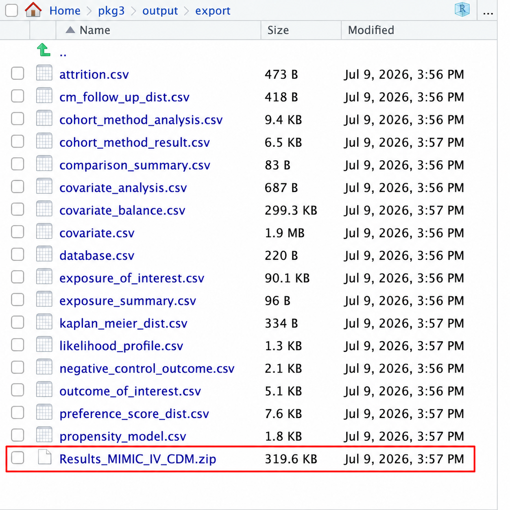

R패키지 실행 및 결과 확인
심화반 1일차 7교시 | CDM 로 RCT재현(2)
2026-07-22
CDM META Analysis 실행
- output 폴더에 저장된 결과물 .zip 파일 다운로드
- output -> export -> Results_MIMIC_IV_CDM.zip
- 인터넷에 openstat.ai 검색 후 들어가기
- 기초 분석 오른쪽 아래에 있는 CDM META ANALYSIS 클릭
- 왼쪽 상단에 있는 Upload .zip 파일에 저장한 .zip 파일 업로드
- 결과 확인
- 왼쪽 상단에 있는 Upload .zip 파일에 저장한 .zip 파일 업로드
- 기초 분석 오른쪽 아래에 있는 CDM META ANALYSIS 클릭
